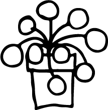
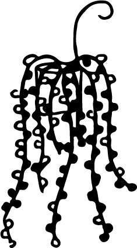

Makkelijke kamerplanten
Als je nieuw bent met planten, zijn er genoeg leuke, makkelijke planten die bijna overal kunnen staan en die een foutje hier en daar prima overleven. Zo kun je toch genieten van groen in huis zonder al te veel gedoe! Hier zijn een aantal leuke opties!

Pilea peperomioides
(pannenkoekenplant)
1x per week water geven en de grond licht laten opdrogen.
Het liefst wilt deze plant halfschaduw of indirect licht, niet direct voor het raam.
Epipremnum aureum
(Goudrank)
1x per week water geven zodra de bovenstelaag droog aanvoelt.
Het liefst staat deze plant in halfschaduw tot schaduw.

Ceropegia woodii
(Chinees lantaarnplantje)
Deze plant is super voor degene wie watergeven soms vergeet, hij hoeft namelijk maar 1x per 2 weken water!
Helder, indirect licht of dicht bij het raam, hier wordt deze plant erg blij van.